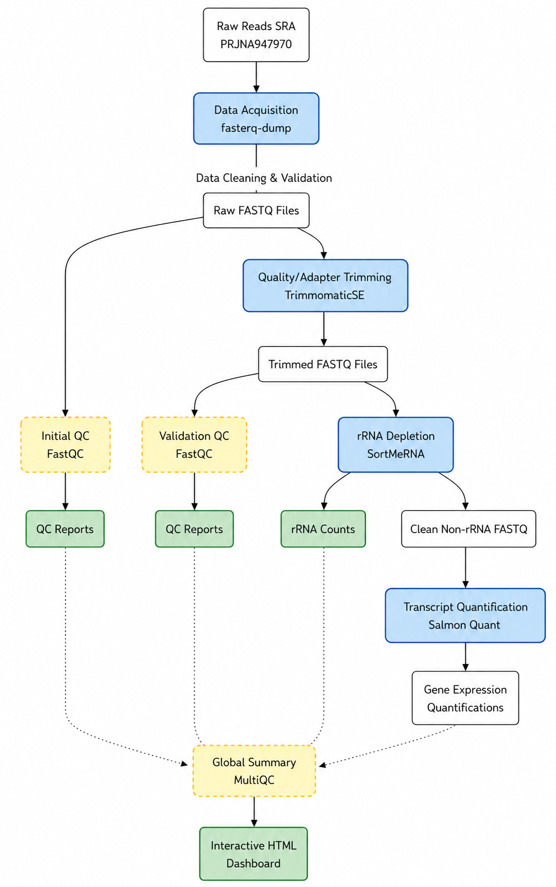
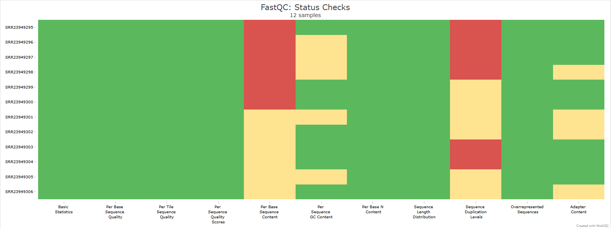

Data Preprocessing Pipeline
From Raw Single-End Reads to Quantified Transcripts
Before executing the computational pipeline, it is crucial to understand the origin and experimental design of the dataset. The data utilized in this project was retrieved from the NCBI Sequence Read Archive (SRA) under BioProject PRJNA947970.
Dataset Overview
The dataset comprises 12 high-depth transcriptomic samples of human cardiomyocytes (derived from the IMR90 cell line). The sequencing was performed using the Illumina NovaSeq 6000 platform, producing Single-End RNA-Seq reads.
The core objective of the experiment is to investigate the effects of spaceflight and microgravity on cardiac muscle cells. The 12 samples are evenly divided into two distinct experimental conditions:
ISS uG (Microgravity): 6 samples (SRR23949301 – SRR23949306) cultured aboard the International Space Station under true microgravity. ISS 1G (Normal Gravity): 6 samples (SRR23949295 – SRR23949300) cultured under standard 1G conditions, serving as the ground-truth control group.
# Download raw single-end FASTQ files using SRA Toolkit and the manifest
while read SRR; do
echo "Processing download for: ${SRR}"
fasterq-dump ${SRR} --outdir data/
gzip data/${SRR}.fastq
done < list_of_srrs.txt
A rigorous bioinformatics pipeline was implemented to process 12 single-end Illumina RNA-Seq samples (SRR23949295 – SRR23949306). The core objective is to investigate the effects of spaceflight and microgravity on cardiomyocyte transcriptome.
To systematically fetch this data, we utilized the SRA Toolkit alongside the metadata manifest (SraRunTable.csv).
Conceptual Pipeline Overview
The diagram below visualizes the end-to-end data flow, illustrating how raw sequences are cleaned, validated, and quantified to generate a reliable gene expression matrix.

1. Initial Quality Assessment (FastQC)
We first assessed the quality of the raw sequence data using FastQC. Initial reports highlighted the presence of Illumina adapter sequences and typical quality drop-offs at the 3’ ends of the reads, necessitating quality and adapter trimming.

# Run FastQC on all raw sequence files
fastqc -t 8 data/*.fastq.gz -o fastqc_results/
2. Adapter & Quality Trimming (Trimmomatic)
To remove technical artifacts, we utilized Trimmomatic in Single-End (SE) mode. We provided a custom adapter file (MyAdapters.fa) to accurately clip residual Illumina adapters and employed a sliding window approach (Q20) to trim low-quality bases. The trimming was highly successful, with an average survival rate of ~99.94% across all samples.
# Trimming with custom adapters and quality thresholds
for file in data/*.fastq.gz; do
base_name=$(basename ${file} .fastq.gz)
trimmomatic SE -threads 8 \
${file} \
trimmed_data/${base_name}_trimmed.fq.gz \
ILLUMINACLIP:MyAdapters.fa:2:30:10 \
LEADING:3 TRAILING:3 SLIDINGWINDOW:4:20 MINLEN:36 \
2> trim_logs/${base_name}_trimmomatic.log
done
3. Ribosomal RNA Depletion (SortMeRNA)
Cardiomyocyte RNA extractions often contain high levels of ribosomal RNA (rRNA), which can bias downstream transcript quantification. To ensure absolute purity, the trimmed reads were filtered against the SortMeRNA default ribosomal database.
The results indicated an exceptionally high-quality library preparation: on average, only ~3.96% of the reads were identified as residual rRNA. These were successfully depleted, leaving approximately 96% of the reads as pure, highly enriched RNA for quantification.
# Deplete ribosomal RNA to enrich for mRNA sequences
for file in trimmed_data/*_trimmed.fq.gz; do
base=$(basename "$file" _trimmed.fq.gz)
sortmerna --ref ./sortmerna_db/smr_v4.3_default_db.fasta \
--reads "$file" \
--workdir "workdir_${base}" \
--aligned "clean_data/${base}_rRNA" \
--other "clean_data/${base}_non_rRNA" \
--fastx \
--threads 8
done
4. Transcript Quantification (Salmon)
The highly purified, rRNA-depleted reads were directly quantified against the human reference transcriptome (Gencode v44) using Salmon’s fast, alignment-free methodology.
The quantification results were outstanding. Across all 12 samples, the mapping rate ranged from 94.1% to 95.3%, achieving an exceptional average mapping rate of ~94.8%. These exceptionally high alignment rates confirm the purity of the preprocessed libraries and provide a highly reliable foundation for the subsequent Differential Expression Analysis.
# Quantify transcripts against the human reference index
for file in clean_data/*_non_rRNA.fq.gz; do
base=$(basename "$file" _non_rRNA.fq.gz)
salmon quant -i salmon_prep/salmon_index_human -l A \
-r "$file" \
-o salmon_quants/${base}_quant
done
5. Final Pipeline Validation (MultiQC)
All logs and QC metrics from FastQC, Trimmomatic, SortMeRNA, and Salmon were compiled into a single interactive report for final validation.
# Aggregate all individual tool reports into a single interactive dashboard
multiqc . -f -o final_multiqc_report/
Explore the interactive MultiQC report below: